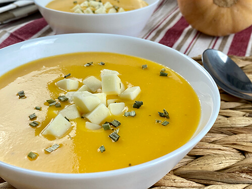

Sopa Crema de Calabaza

Ingredientes:
- 1 zapallo o calabaza de buen tamaño pelado, sin semillas y cortado en trozos pequeños
- 3 cucharadas de aceite de oliva
- 1 cebolla blanca picada finamente
- 3 dientes de ajo machacados
- 1 cucharadita de comino molido
- 4 tomates pelados y picados
- 6 tazas de caldo de pollo o verduras
- Sal
- Pimienta al gusto
Preparación:
Caliente el aceite en una cacerola de buen tamaño. Añada la cebolla, el ajo, el comino y los tomates, cocine hasta que las cebollas estén suaves, por unos 5 minutos. Añada el caldo de pollo o verduras y haga hervir. Añada los trozos de zapallo o calabaza y haga hervir nuevamente, reduzca la temperatura y cocine a fuego lento hasta que los pedazos de zapallo estén suaves, aproximadamente unos 30 minutos. Dejar que la sopa se enfríe lo suficiente para poder licuarlo, licuar hasta obtener un puré. Añada sal y pimienta al gusto, re-calentar si la sopa lo requiere Sirva la sopa caliente con queso feta o queso de cabra y cebolletas picadas.
